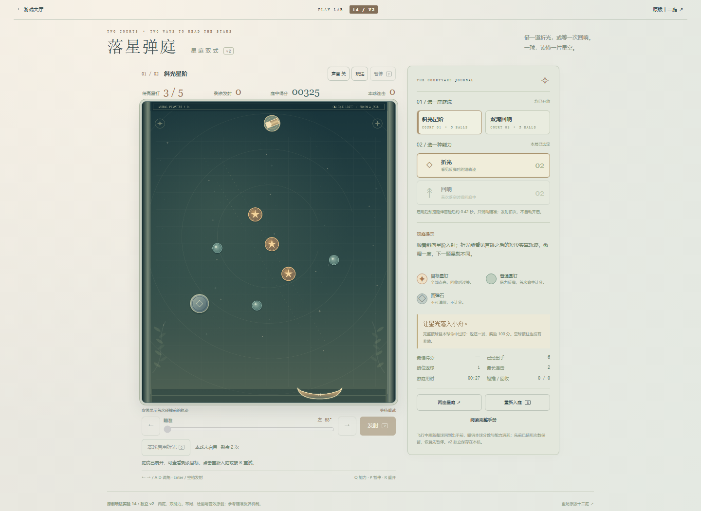

本批无运行修改。静态筛查35个其它活动推荐入口、70个HTML/控制器文件，只选落星弹庭与四季小田两处具体线索。未发现第二个post型推进按钮丢失：弹庭仍有外部重试与R提示，小田是三章完结后的只读查看。
当前普通UI只实测落星弹庭两个视口的自然球尽→查看→Enter重试→暂停刷新；小田复用既有自然结局证据，不重跑三章。基线1186f7371f94a403e1dfb9b0bb6e2466379ad821。

下一候选：390CSS查看后焦点在屏外重试按钮，顶部约1575px、视口高844px；Enter仍可重试，不是入口消失。本批记录后交回，保留查看场景目的，不扩大成新的界面改造。
范围、真实结果与限制 · 70文件对象清单 · 当前普通UI记录 · 复现脚本 · 首次脚本错误记录 · 错误归因 · 小田既有终局实玩 · 弹庭既有最好/重试 · 邮差已修返回路径
无运行、存档或规则修改，保留40项和旧版。窄屏为桌面模拟；真机、声音、手感与审美未验。有限证据不是全站无缺陷证明。